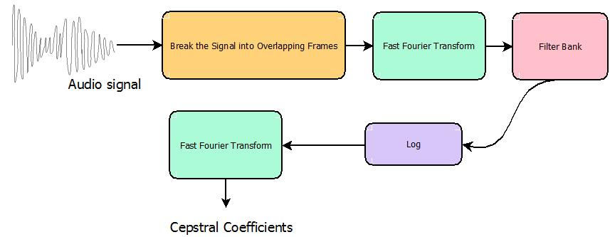

1.3. MFCC Features¶
MFCC stands for Mel Frequency Cepstral Coefficient. MFCC features are widely used in speech recognition problems. Speech is dictated by the way in which we use our oral anatomy to create each sound. Therefore, one way to uniquely identify a sound (independent of the speaker) is to create a mathematical representation that encodes the physical mechanics of spoken language. MFCC features are one approach to encoding this information.
1.3.1. Overview¶
At a high level the process for obtaining MFCC features looks like this:
For an in-depth explanation of some of these steps and the motivation behind them, see the tutorial found here.
Obtaining the cepstral coefficients for a given signal can be done using the MFCC class. This example can get you started. You can adjust several hyperparameters using a config file. The config file is expected to be in .json format. A list of the parameters that can be modified can be found here: process().
The cepstral coefficents provide the basic MFCC features for a signal. However, accuracy can often be improved by using additional features. These features include delta, acceleration, energy.
1.3.1.1. Delta¶
The cepstral coefficients capture the envelope of the spectral power. However, this does not account for the change in these coefficients over time. Computing the derivative of the coefficients helps capture the aspects of the frame that change over time. When we choose a frame length, we need to bare in mind these changes over time because choosing a frame length that is too short might not provide enough information about changes in frequency yet choosing a frame that is too long can introduce changes that are too dramatic.
Using the delta() function calculates the derivatives and appends them as features.
Warning
Make sure to read Understanding set_outfeat() for details on how to include the deltas as features.
1.3.1.2. Acceleration¶
Acceleration is similar to delta but represents the second derivative. The features can be appended using accel().
Warning
Make sure to read Understanding set_outfeat() for details on how to include acceleration as a feature.
1.3.1.3. Energy¶
Energy can be an important feature. Energy is automatically computed when calulating the MFCC features. To include energy as a feature in the feature vector, append ‘e’ to the arguement of the set_outfeat function.
Warning
Make sure to read Understanding set_outfeat() for details on how to include energy as a feature.
Note
The order in which letters are passed to set_outfeat() is reflected by the feature vector. For example, f denotes the base features, thus if “ef” is passed to set_outfeat the resulting vector will have the energy feature followed by the base features. In contrast, if “fe” is passed to set_outfeat, the base features will appear first in the feature vector followed by the energy feature.
1.3.1.4. Shifted Delta Features (SDC)¶
Shifted delta features can be used to improve language recognition. Results using sdc features are comparable to using PPRLM and calculating these features is less computationally expensive. SDC features provide additional temporal features. They are created by stacking delta cepstra computed over several frames.
These features can be added using sdc().
1.3.2. Understanding set_outfeat()¶
set_outfeat() allows the user to select the features to be included. By default, set_outfeat() is set to ‘all’. This means that all calculated features will be included with the exception of energy. To choose a subset of these features, we pass set_outfeat() a string indicating the desired features. The features must first be calculated to be able to include them. Below is a table of the recognized characters and the feature set they represent:
| Character | Function |
|---|---|
| ‘f’ | Base Features |
| ‘d’ | Delta Features |
| ‘a’ | Acceleration Features |
| ‘e’ | Energy |
| ‘s’ | SDC Features |
| ‘all’ | All Features (except energy) |
The order in which the characters are listed determines the stacking order of the features. For example, set_outfeat(‘fe’) sets the feature vector to first contain the base features and then appending energy to the end of that vector. Conversely, set_outfeat(‘ef’) begins each feature vector with energy followed by the base feature vectors.